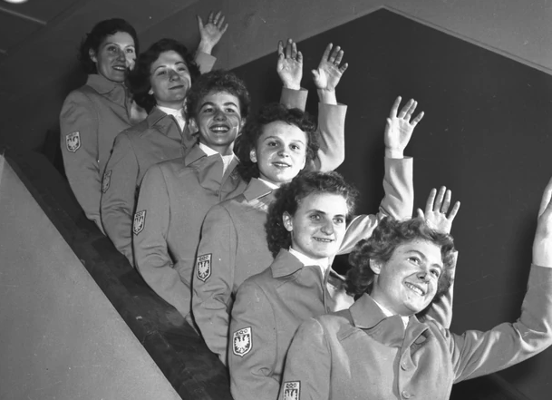

Helena Rakoczy (POL)
1950 World AA Champion
|
 Rakoczy (top left) and her 1956 Olympic teammates. Medal Total Olympic Games: 1 Bronze |
Helena was born in Krakow on December 23, 1921. She wanted to be a ballerina when she was a little girl, but her parents didn't have the money to send her to ballet school. Helena joined the local Sokol instead and took up gymnastics around the age of 10. Her first big gymnastics success was at age 16 when she took third place at a national competition in Lviv.
World War II interrupted her training. She got married and had a daughter when the War ended - and she was persuaded to take up gymnastics again. Helena was hoping to win one medal at the 1950 world championships in Basel. She ended up winnning 4 golds and 1 bronze! A wrist injury sustained prior to the 1952 Helsinki Olympics prevented her from doing well there, but four years later in Melbourne she and her teammates won a bronze medal for their group apparatus routine.
Helena retired after the Olympics and became a coach, working both in her native Krakow and overseas. She died on September 2, 2014.
Competition Results